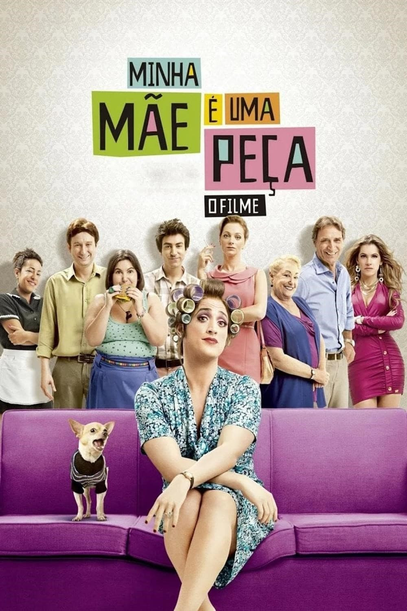

Minha mãe é uma peça 2

Diretor: César Rodrigues
Com: Paulo Gustavo, Rodrigo Pandolfo, Mariana Xavier
Gênero: Comédia - Dublado
Censura: 12 anos
Tempo de duração: 85 min.
Sinopse: Dona Hermínia está de volta, agora lidando com os desafios de ser avó e com a vida amorosa dos filhos. Entre situações hilárias e emocionantes, ela mostra que, mesmo com todas as confusões, o amor de mãe é insubstituível.